Part 1: Introduction
General Background
Seeing, hearing, touching – every moment, our brain receives numerous sensory inputs. How does it organize this wealth of data and extract relevant information? We know that the brain forms a coherent neural representation of the external world called the cognitive map (Tolman (1948)), formed by the combined firing activity of neurons in the hippocampal formation. For example, place cells are neurons that fire when a rat is at a particular location (Moser, Kropff, and Moser (2008)). Together, the activity of hundreds of these place cells can be modeled as a manifold, mapping the rat’s location in physical space. More specifically, the hippocampus creates such a cognitive map through “path integration” of various cues, such as optic flow, vestibular inputs, and proprioception to keep track of an animal’s position.
To provide insights on how the brain generates such cognitive maps, manifold learning has been used to extract lower-dimensional geometric representations from high- dimensional neural data (Mitchell-Heggs et al. (2023), Schneider, Lee, and Mathis (2023), Chaudhuri et al. (2019)).
The question then arises: Can we decode important navigational behavioural variables during an experiment through manifold learning? In this blog post, we will focus on developing a new procedure for learning a neural manifold from specific navigation experiments (Madhav et al. (2024), Jayakumar et al. (2019)) that will allow us to improve the decoding of an important navigational behvaioural variable. We first need to introduce the experimental setup.
Experimental Setup

The Dome Apparatus
Figure 1 illustrates the experimental apparatus, known as the Virtual Reality Dome. In the experiment, rats ran on a circular platform surrounded by a hemispherical projection surface called the Dome. Electrodes were inserted into the CA1 of the hippocampus of male evan’s rats and spike rate neural activity of hippocampal place cells was recorded during the experiment. Hippocampal place cells (referred to as simply “place cells” from here on) are neurons in the hippocampus that fire when an animal is in a specific location.
To better understand place cells, let’s consider a simple example. Imagine a rat moving along a horizontal linear track. Suppose the rat has only three place cells. In this scenario:
- Neuron 1 fires when the rat is at the very left of the track.
- Neuron 2 fires when the rat is in the middle of the track.
- Neuron 3 fires when the rat is at the very right of the track.
As the rat moves along the track, specific place cells activate depending on the rat’s location. This pattern of firing enables the rat to construct an internal cognitive map of its environment. Such spatial encoding is important for navigation and memory formation.
In this blog, we will analyze data from two experiments that examine place cell activity under controlled conditions. While both experiments share similarities in how brain activity was recorded and analyzed, they differ in their use of external sensory cues.
Experiment 1: Jayakumar et al., 2019
This experiment used a virtual reality dome (Madhav et al. (2022)) which projects visual landmarks onto the interior of the dome. The experimenters have the ability to displace these landmarks systematically. The experimental gain, denoted as \(\mathcal{G}\) quantifies the relationship between the rat’s movement and the displacement of these landmarks, creating controlled mismatches between self-motion cues and feedback from external landmarks.
Key Landmark Gain Conditions:
\(\mathcal{G}\) = 1: Landmarks remain stationary in the lab frame, with the rat traveling the same distance in both the landmark and lab frames.
\(\mathcal{G}\) > 1: Landmarks move opposite to the rat’s direction, the rat runs a greater distance in the landmark frame than in the lab frame. This causes the rat to perceive itself as having travelled a greater distance than it actually has.
\(\mathcal{G}\) < 1: Landmarks move in the same direction as the rat but more slowly, hence the rat runs a shorter distance in the landmark frame than in the lab frame. This causes the rat to perceive itself as having travelled a shorter distance than it actually has.
Experiment 2: Madhav et al., 2024
In this follow-up study, the virtual reality dome projected moving stripes on the interior to provide controlled optic flow cues. The movement of these stripes was coupled to the rat’s movement, with the stripe gain (\(\mathcal{S}\)) determining the relationship between the rat’s speed and the stripes’ speed. This setup allowed for controlled distortions of the rat’s perception of self-motion.
Key Stripe Gain Conditions:
\(\mathcal{S}\) = 1: Stripes are stationary relative to the lab frame, meaning the rat is not recieving conflicting cues.
\(\mathcal{S}\) > 1: Stripes move opposite to the rat’s direction, causing the rat to percieve itself as moving faster than it is.
\(\mathcal{S}\) < 1: Stripes move in the same direction but slower than the rat, causing the rat to percieve itself as moving slower than it is.
For example, if a rat ran counterclockwise (CCW), then with S = 2, the stripes moved clockwise (CW) at the same speed as the rat. Likewise, with S = 0.5, the stripes moved CCW at half the speed of the rat.
Hippocampal Gain: Definition
For both experiments, Dr. Madhav and colleagues introduce a value called the hippocampal gain, \(\mathcal{H}\) defined as:
\[ \mathcal{H} = \frac{\text{distance travelled in hippocampal reference frame}}{\text{distance travelled in lab reference frame}}. \]
It quantifies the relationship between the rat’s distance travelled in the internal hippocampal frame versus the lab frame. The distance travelled in the lab reference frame is simply the true distance travelled in physical space. The distance travelled in the hippocampal reference frame can be thought of as the distance the rat “perceives” itself to be moving from its place cell activity - essentially the “distance” represented in the neural activity.
\(\mathcal{H} = 1\): The rat perceives itself as moving the “correct” speed.
\(\mathcal{H} > 1\): The rat perceives itself as moving faster than it actually is with respect to the lab frame.
\(\mathcal{H} < 1\): The rat perceives itself as moving slower than it actually is with respect to the lab frame.
\(\mathcal{H}\) gives valuable insights into how these visual cues (optic flow cues or landmark cues) affect the rats’ internal representation during the task. It gives an understanding of how the rats update their perceived position in the environment.
For example, an \(\mathcal{H}\) value of 2 would mean that the rat perceives itself as moving twice as fast as it actually is. Consequently each place cell corresponding to a specific location in the maze will fire twice per lap rather than once.
For the remainder of this blog, we will refer to both lab frame and hippocampal position as lab frame angle, and hippocampal angle, respectively. This is because the rat is moving on the perimeter of a circular dome, making angle and position effectively interchangeable. As we will see, referring to it as an angle simplifies the discussion and makes more sense given the geometry of the setup.
Calculation of Hippocampal Gain and Current Limitations
Method of Determining \(\mathcal{H}\): In the two papers discussed earlier (Jayakumar et al. (2019), Madhav et al. (2024)), \(\mathcal{H}\) was determined by analyzing the spatial periodicity of place cell firing over multiple laps using Fourier transforms.
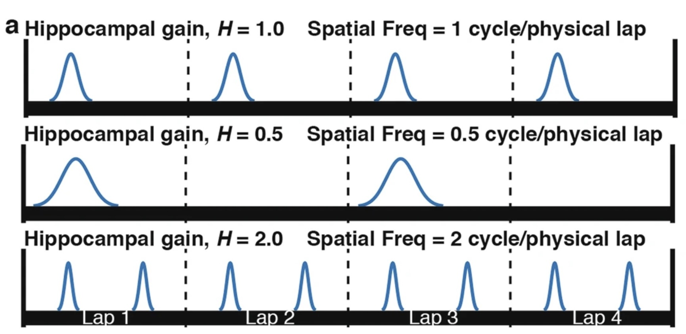
In Figure 2 we see an illustration of how the Fourier transform method of decoding \(\mathcal{H}\) is performed. The spatial frequency of firing for each place cell effectively decodes the \(\mathcal{H}\) value for that specific neuron, and the mean \(\mathcal{H}\) value over all neurons gives the estimated \(\mathcal{H}\) value over the neuronal population.
Limitation 1
This method lacks temporal precision within individual laps since it uses a Fourier Transform over 6 laps.
A more precise, within-lap decoding of \(\mathcal{H}\) could provide a deeper understanding of how path integration occurs with finer temporal resolution. This could lead to new insights into how the brain updates its neural representation when receiving conflicting visual cues.
Limitation 2
Note how the decoding of \(\mathcal{H}\) is directly tied to the neural data, i.e. the periodicity of neuronal spikes. Now, imagine a scenario where, instead of a single varying neural representation \(\mathcal{H}\), we have two - \(\mathcal{H}\) and another representation, \(\mathcal{A}\). In such cases, these two representations would be coupled in the neural data, making it impossible to disentangle them using the traditional approach.
However, neural manifold learning offers a promising approach to decouple these representations. For instance, consider the hypothetical scenario below, where the data forms a torus.
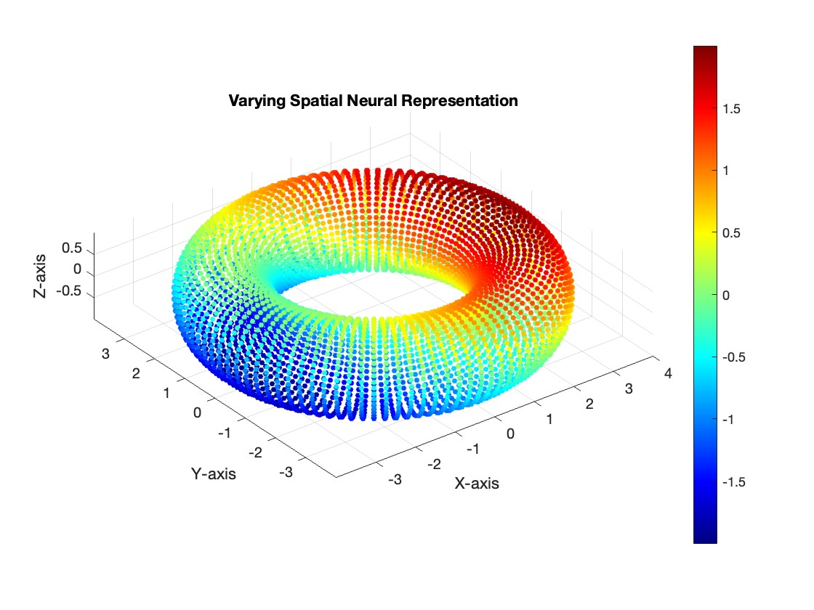
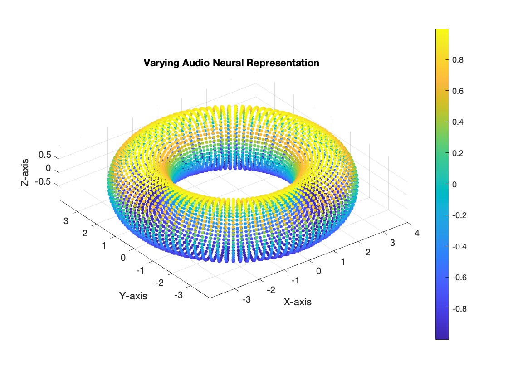
In our current dataset, we have a single varying neural representation and therefore expect a simple 1D ring topology. However, as seen in Figure 3, the data might lie on a torus. On this structure, the spatial representation (\(\mathcal{H}\)) could vary along the major circle of the torus, while the auditory representation (\(\mathcal{A}\)) could vary along the minor circle. The proposed method would enable us to disentangle and decode the two neural representations independently. We wish to validate the new method for single varying representations, and then experiment with two varying neural representations.
Proposed Method
Our main goal is therefore to determine this \(\mathcal{H}\) value without using a Fourier Transform and instead somehow find a method of determining \(\mathcal{H}\) which is not tied directly to the neural data. We will achieve this by applying a specific manifold learning tehnique.
The basic idea is as follows: 1. First, we aim to project the neural data into some latent space. In this space, we want the points to map out the topology of the task - specifically, to encode hippocampal angle. 3. We want to validate that this task forms a 1D ring topology 4. We want to validate and construct a latent parametrization of this manifold, specifically designed to directly reflect the hippocampal angle. 5. With an accurate hippocampal angle parametrization, we then decode \(\mathcal{H}\) using the original equation, giving us a more temporally fine estimation of \(\mathcal{H}\).
Part 2: Methods
Manifold Learning Technique -CEBRA
CEBRA, introduced in Schneider, Lee, and Mathis (2023), is a powerful self-supervised learning algorithm designed to create consistent, interpretable embeddings of high-dimensional neural recordings using auxiliary variables such as behavior or time. CEBRA generates consistent embeddings across trials, animals, and even different recording modalities. In our analysis, we will use the discovery mode of CEBRA, with only time as our auxiliary variable. CEBRA is implemented in python.
In neuroscience, understanding how neural populations encode behavior is a large challenge. Traditional linear methods like PCA, or even non-linear approaches like UMAP and t-SNE, fail in this context because they fail to capture temporal dynamics and lack consistency across different sessions or animals. CEBRA gets past these limitations by both considering temporal dynamics and providing consistency across different sessions or animals.

Figure 4 is a schematic showing the CEBRA architecture. CEBRA uses a convolutional neural network (CNN) encoder trained with contrastive learning to produce a latent embedding of the neural data.
The CEBRA model is trained using a contrastive learning loss function. In CEBRA, this is achieved through InfoNCE (Noise Contrastive Estimation), which encourages the model to distinguish between similar (positive) and dissimilar (negative) samples, given some similariy measure.
The loss function is defined as: \[ \mathcal{L} = - \log \frac{e^{\text{sim}(f(x), f(y^+)) / \tau}}{e^{\text{sim}(f(x), f(y^+)) / \tau} + \sum_{i=1}^{K} e^{\text{sim}(f(x), f(y_i^-)) / \tau}} \]
Where \(f(x)\) and \(f(y)\) are the encoded representations of the neural data after passing through the CNN, \(\text{sim}(f(x), f(y))\) represents a similarity measure between the two embeddings, implemented as cosine similarity. Here, \(y^{+}\) denotes the positive pair (similar to \(x\) in time), \(y_{i}^{-}\) denotes the negative pairs (dissimilar to \(x\) in time), and \(\tau\) is a temperature parameter that controls the sharpness of the distribution.
Note that the similarity measure depends on the CEBRA mode used, and we have used time as our similarity measure. This way, the embeddings reflect the temporal structure of the data. The final output is then the embedding value in the latent space.
Once we obtain the neural embeddings from CEBRA, the next step is to determine the underlying manifold that describes the structure of the resulting point cloud. For example, let’s consider the output of a CEBRA embedding in 3D space from one experimental session.
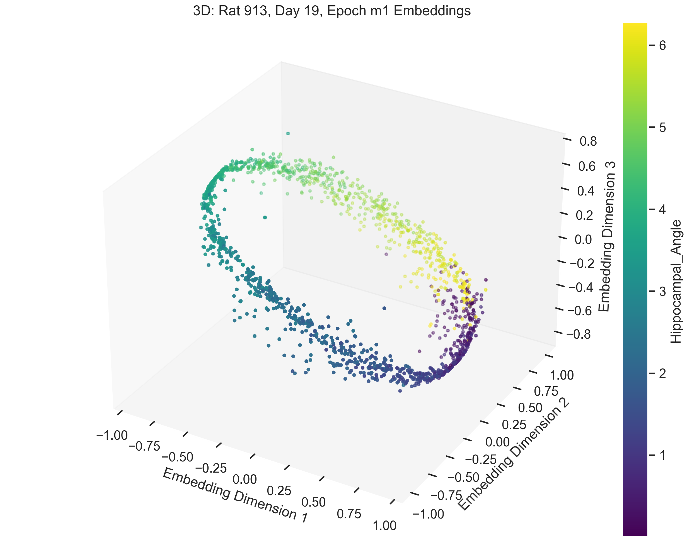
The embedding appears to form a 1D circle in 3D space, which is consistent with our prediction that the neural activity encodes the hippocampal reference frame angle rather than the lab frame angle. We now want to validate quanititatively that our task forms a 1D ring topology. To do this, we apply a technique known as Persistent Homology.
Persistent Homology
In order to understand Persistent homology, we first need to understand how the topology of a manifold is described. Betti numbers describe the topological features of a space, with the \(k\)-th Betti number counting the number of \(k\)-dimensional “holes” in the manifold.

Figure 6 shows a few basic topological spaces and their corresponding Betti numbers. Thus, for a 1D ring, the expected Betti numbers are:
\[ \beta_0 = 1 : \text{One connected component.} \] \[ \beta_1 = 1 : \text{One 1D hole (i.e., the circular loop).} \] \[ \beta_2 = 0 : \text{No 2D voids.} \]
Thus, the expected Betti numbers for our manifold are (1, 1, 0). If the Betti numbers extracted from the persistent homology analysis align with these values, it confirms that the neural dynamics trace a 1D ring.
We now turn to persistent homology and how it helps us determine the Betti numbers of our manifold.

The idea of persistent homology is to create spheres of varying radii around each point in the point cloud, and from those spheres, track how the topological features of the shape change as the radius grows. By systematically increasing the radii, we can observe when distinct points merge, when loops (1D holes) appear, and when higher-dimensional voids form. These features persist across different radius sizes, and their persistence provides a measure of their significance. In the context of neural data, this allows us to detect the underlying topological structure of the manifold.
Spline parametrization for Unsupervised Decoding (SPUD)
Once we’ve validated the assumption that our data forms a 1D ring manifold, we can proceed to fitting a spline to the data. We do this so that we can parametrize our behavioural variable, hippocampal angle (\(\theta_{H}\)) along the point cloud. There are many different methods, but the one chosen for this purpose was taken from Chaudhuri et al. (2019). The spline is defined by a set of points, or knots, which we decide to initialize using kmedoids clustering to the point cloud(Jin and Han (2011)). The knots are then fit to the data over \(\mathcal{k}\) steps by optimizing an objective function defined as follows:
\[ \text{cost} = \text{dist} + \text{curvature} + \text{length} - \text{log(density)}, \]
where dist is the distance of each point to the spline, curvature is the total curvature of the spline, length is the total length of the spline, and density is the point cloud density of each knot.
Parametrizing the Latent Variable
Chaudhuri et al. (2019) demonstrated that this method works for head direction cells in mice to accurately parametrize, i.e. decode the head direction. Our goal is to have the parametrization accurately decode our latent variable of interest, \(\theta_{H}\).
The method of parametrization we used is known as a natural parametrization. A natural parametrization ensures that equal distances in the embedding space correspond to equal changes in the latent variable. This comes from the idea that neural systems allocate resources proportional to the significance or frequency of stimuli. For example, in the visual cortex, frequently occurring stimuli, such as vertical or horizontal orientations, may be encoded with greater resolution. Conversely, in systems like place cell firing, where all angles or angles in a dome are equally probable, the natural parametrization reflects a uniform encoding strategy, avoiding overrepresentation of specific locations (Chaudhuri et al. (2019)).

In Figure 8, we demonstrate this by fitting a spline to the CEBRA embedding, with data points colored according to their corresponding hippocampal angles. The results show a near-perfect alignment between the spline and the hippocampal angles, precisely the outcome we aimed for.
Next, we demonstrate how the parametrization allows us to arrive at our primary objective: decoding \(\mathcal{H}\).
Decoding Hippocampal Gain (\(\mathcal{H}\))
The final step is to decode \(\mathcal{H}\) from the parametrization. The method to do this is straightforward. Once we have parametrized the spline accurately to the neural data, we calculate the hippocampal gain by comparing the distance travelled in the neural manifold (derived from our spline, which gives us hippocampal angle) to the distance travelled in the lab frame (actual movement of the rat).
The idea is that:
\[ \mathcal{H} = \frac{d\theta_\mathcal{H}}{d\theta_\mathcal{L}} \]
where \(\theta_H\) is the angle in the hippocampal reference frame, decoded from our spline parametrization of the neural manifold, and \(\theta_L\) is the angle of the rat in the lab frame.
Note that this is actually just the original definition of \(\mathcal{H}\), but now \(\theta_H\) is determined by our spline parameter, not the Fourier transform method.
Let’s consider a specific time interval, such as 1–2 seconds, to demonstrate the application of this equation. To calculate the hippocampal gain within this interval, we start by identifying where the neural activity at times 1 and 2 maps onto the spline parameterization of our manifold, denoting these angles as \(\theta_{H1}\) and \(\theta_{H2}\), respectively. Simultaneously, we observe the lab frame angles at the same times, referred to as \(\theta_{L1}\) and \(\theta_{L2}\). With these values, the hippocampal gain between t=1 and t=2 is determined as:
\[ \mathcal{H}(\text{between } t=1 \text{ and } t=2) = \frac{\theta_{\mathcal{H2}} - \theta_{\mathcal{H1}}}{\theta_{\mathcal{L2}} - \theta_{\mathcal{L1}}} \]
We extend the above example to all consecutive time points in the experiment to compute hippocampal gain (\(\mathcal{H}\)) over the course of the experiment. The following Python code demonstrates how this is implemented:
def differentiate_and_smooth(data=None, window_size=3):
# Compute finite differences.
diffs = np.diff(data)
# Compute the moving average of differences.
kernel = np.ones(window_size) / window_size
avg_diffs = np.convolve(diffs, kernel, mode='valid')
return avg_diffs
derivative_decoded_angle = differentiate_and_smooth(
data=filtered_decoded_angles_unwrap,
window_size=60 # Hippocampal angle from manifold parametrization.
)
derivative_true_angle = differentiate_and_smooth(
data=binned_true_angle_rad_unwrap,
window_size=60 # True angle from session recordings.
)
decode_H = derivative_decoded_angle / derivative_true_angleThis code calculates the hippocampal gain, \(\mathcal{H}\), by dividing the finite differences of the hippocampal angle (obtained from the manifold parametrization) by the derivative of the true angle (obtained from session recordings). The result can be compared to \(\mathcal{H}\) determined from the traditional Fourier-based method, shown in the results section.
Part 3: Results
Datasets
| Data Qualities | Landmark Experiment Dataset (Jayakumar et al. (2019)) | Optic Flow Experiment Dataset (Madhav et al. (2024)) |
|---|---|---|
| Number of Trials | 72 | 65 |
| Data Access | Available upon request | Available at: https://doi.org/10.7281/T1/THLC8N |
| Average Number of Recorded Neurons | 10 | 33 |
As discussed in Experimental Setup, there are two types of experiments. Their datasets are summarized above.
Examples
In this section, we present and analyze the results. In some trials, the data failed to form a clear 1D ring topology, as evident from the spline parametrization. This can be quantitatively evaluated using persistent homology. In the next section we will provide a more detailed explanation of what constitutes “good” versus “bad” trials.
a 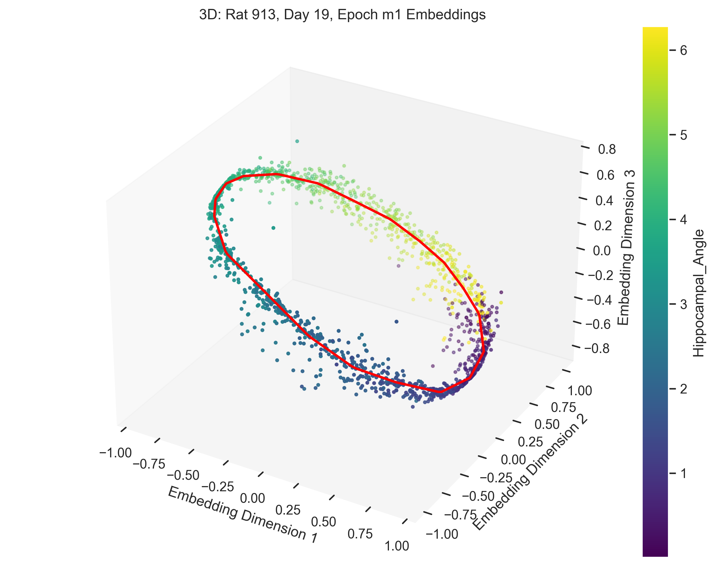
c 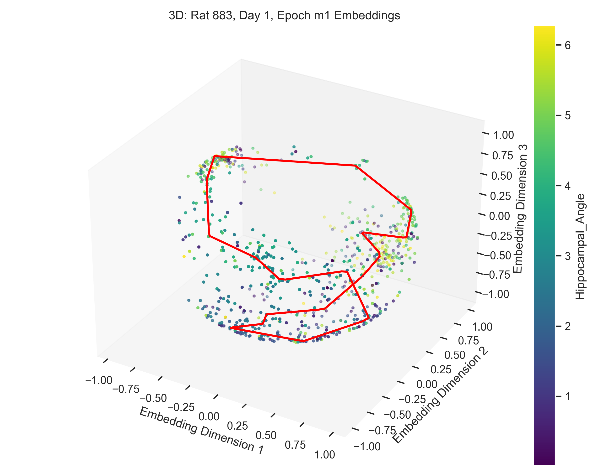
b 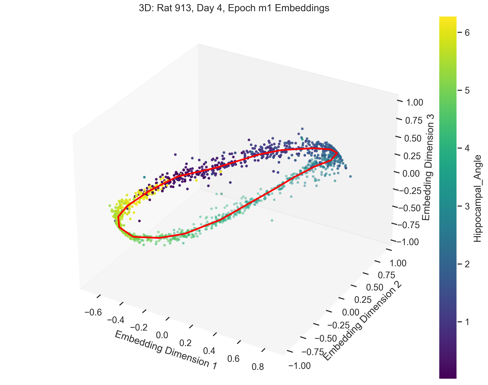
d 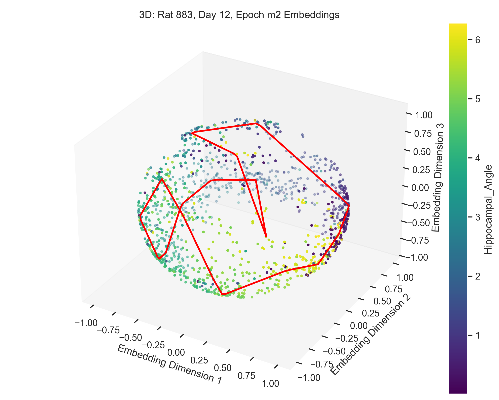
The examples in Figure 9 showcase the application of our method to experimental data from “Control and recalibration of path integration in place cells” (Madhav et al. (2024)). Specifically, we show two “good” trials (session 50 and 36) and two “bad” trials (session 26 and 29).
H values
a 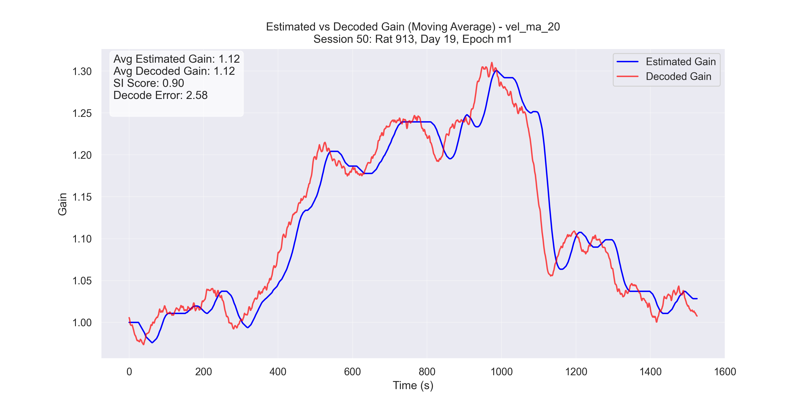
c 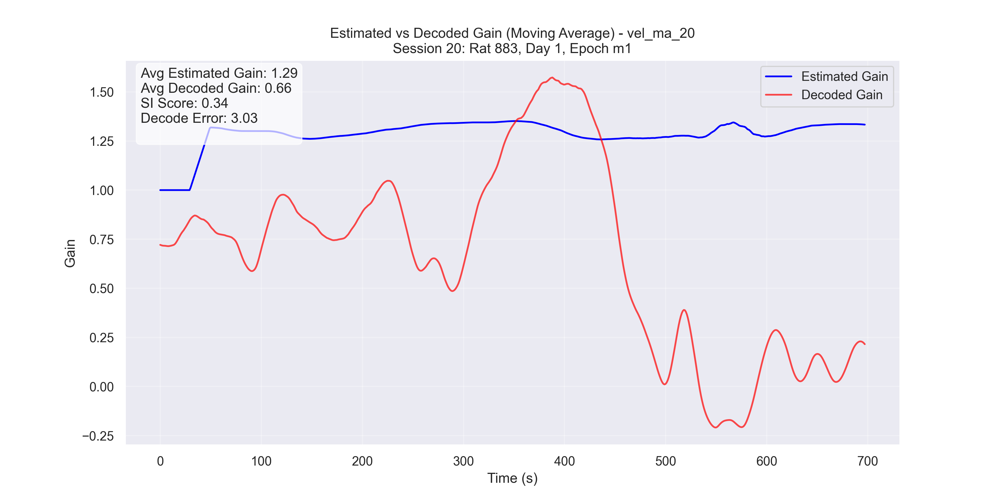
b 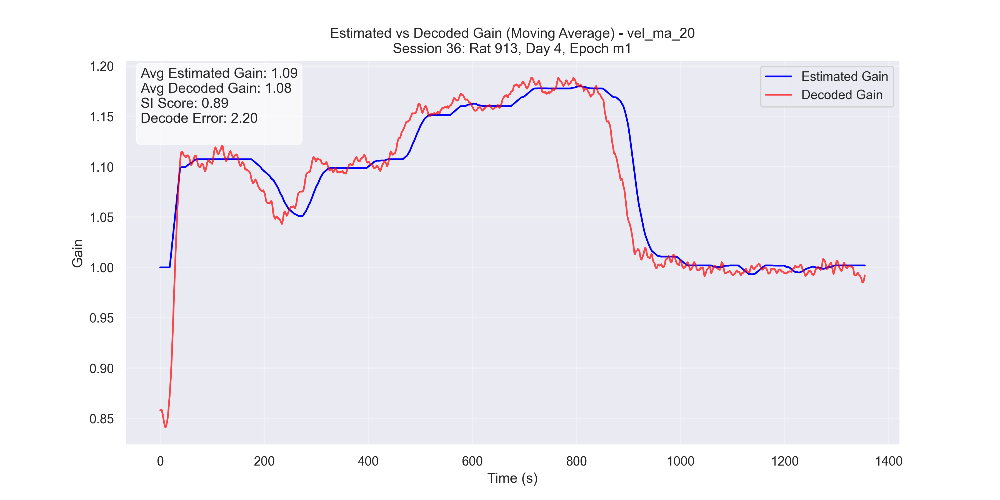
d 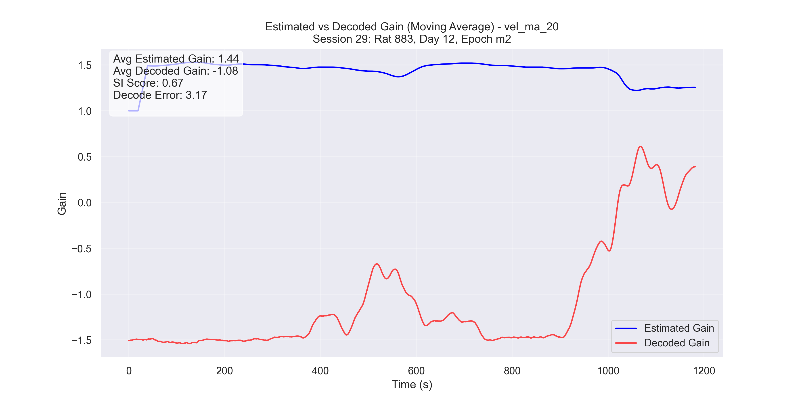
After observing both successful and unsuccessful trials, we sought to indentify the factors that differentiate “good” results from “bad” ones.
To quantify the quality of an embedding, we used the Structure Index (SI) score (Sebastian, Esparza, and Prida (2022)). The SI score measures how well the hippocampal angle is distributed across the point cloud. Using the SI score, It became evident that the quality of results was strongly influenced by the number of neurons in the experimental recording.
- SI ranges from 0 to 1:
- 0: The hippocampal angle is randomly distributed among the point cloud.
- 1: The hippocampal angle is perfectly distributed among the point cloud, indicating a clear and accurate representation.
Thus, a higher SI score corresponds to a better alignment between the hippocampal angle and the manifold parametrization.
Consider the trials discussed earlier:
- Successful trials (Sessions 50 and 36): SI scores were 0.89 and 0.90, respectively.
- Unsuccessful trials (Sessions 26 and 29): SI scores were 0.34 and 0.67, respectively.
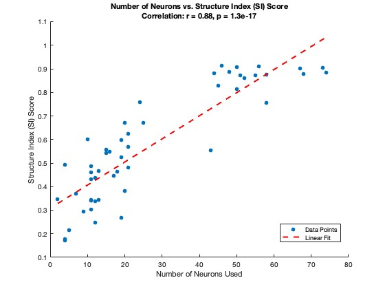
Figure 11 illustrates the relationship between the number of neurons and the SI score. This highlights what we refer to as the “curse of neurons”: A minimum number of neurons is required to achieve a successful result.
General results
In Figure 11, we see that trials with fewer neurons (<35 neurons) are more likely to fail, while those with more neurons (>35 neurons) generally produce high-quality embeddings with accurate parametrization.
Look at the plot below, where we look at the relationship between number of neurons and mean \(\mathcal{H}\) decode error, which is calculated as,
\[ \text{mean} \, \mathcal{H} \, \text{decode error} = \frac{1}{n} \sum_{i=1}^{n} \left( H_{\text{decode}}[i] - H_{\text{fourier}}[i] \right), \]
where the sum is taken over all time indices \(\mathcal{i}\) in each array, and n is the number of time points.
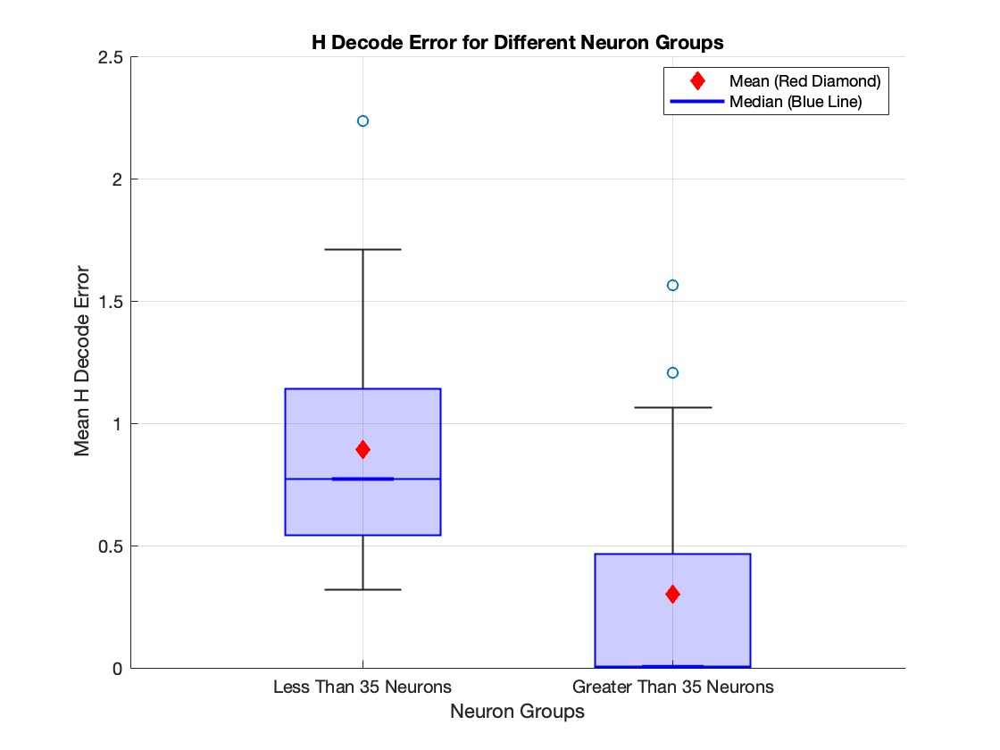
We can observe from Figure 12 that the error for experiments with more than 35 neurons is generally lower than the error for experiments with fewer than 35 neurons. However, it is less evident from the figure that the majority of trials in the >35 neuron group have an error value of less than 0.01. This leads us to the next figure.
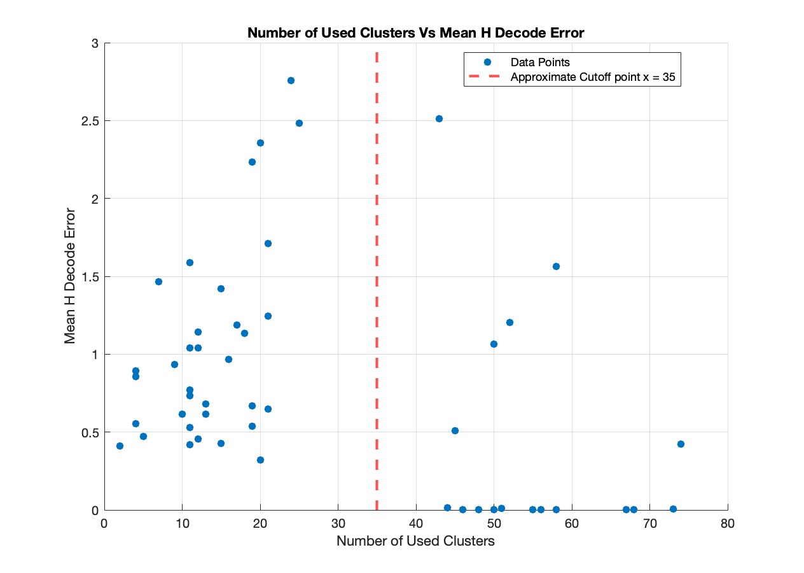
From figure 13 we can see that the majority of trials with more than 35 neurons have a mean \(\mathcal{H}\) decode error of less than 0.01. However, certain trials with more than 35 neurons show higher decoding errors. This is because CEBRA, our method of manifold learning, does not explicitly force a 1D ring topology. The method often produces a 1D ring due to the task and its objective. However, in certain trials, it may converge to a different configuration, such as distributing the point cloud across a sphere, even when we have >35 neurons and a high SI score. Our method is not equipped to handle data that deviates from a 1D ring task topology, which is reflected in those trials where the \(\mathcal{H}\) error exceeds 0.01.
In other words, what we ideally want from CEBRA is the following:
\[ \mathcal{H} \text{ error } < \epsilon \iff \text{>35 neurons in our experiment}, \]
i.e, we want a guarantee that if we have a certain amount of neurons recorded in our experiment, then we will get reasonable results. Whereas what we currently observe is,
\[ \mathcal{H} \text{ error } < \epsilon \implies \text{>35 neurons in our experiment}, \text{ but, } \text{>35 neurons in our experiment} \not\implies \mathcal{H} \text{ error } < \epsilon., \]
which is clear from Figure 13. This unfortunate result motivates part 3 of Next Steps.
Conclusion
Next Steps
Apply the Method to Raw, Unfiltered Spike Data
Instead of relying on manual, ad hoc clustering to identify neuronal spike rates, we propose applying CEBRA directly to the raw recorded neural data. This approach could help with issues related to the “curse of neurons,” as it eliminates the dependency on clustering quality and the number of detected neurons.Simulate an Online Environment
Test whether this method can be applied in a simulated “online” experimental environment. This would involve decoding \(\mathcal{H}\) in real time, allowing closed-loop control of \(\mathcal{H}\).Modify the CEBRA Loss Function
Adapt the CEBRA loss function to incorporate constraints that bias the resulting point cloud to lie on a desired topology. For example, in this project we would constrain the point cloud to lie on a 1D ring. This would allow for consistency of the manifolds produced.
Discussion
In this work, we introduced a novel manifold learning approach using CEBRA to decode hippocampal gain (\(\mathcal{H}\)) without relying on traditional Fourier-based methods. We projected high-dimensional place cell activity into a low-dimensional latent space and validated the resulting circular manifold through persistent homology. Our spline-based “SPUD” parametrization then allowed us to decode hippocampal angle and, consequently, hippocampal gain.
At least 35 well-isolated neurons were required to reliably recover a one-dimensional ring topology. Below this threshold, embeddings frequently collapsed or failed to represent the task structure, leading to inaccurate gain estimates. However, even with at least 35 neurons, accurate recovery of a 1D ring topology was not guaranteed, as the CEBRA loss function does not explicitly enforce this structure.
Despite this challenge, our approach opens new possibilities for using manifold learning to learn neural representations. Looking ahead, integrating raw spike data into the pipeline may alleviate the “curse of neurons” by eliminating the need for explicit clustering of the neuronal data. Adapting these techniques to real-time or “online” experiments could also facilitate neurally closed-loop experiments of this type. Finally, refining the CEBRA loss function to bias embeddings towards intended topological shapes (e.g., 1D ring or toroidal manifolds) could help ensure consistent and accurate results.